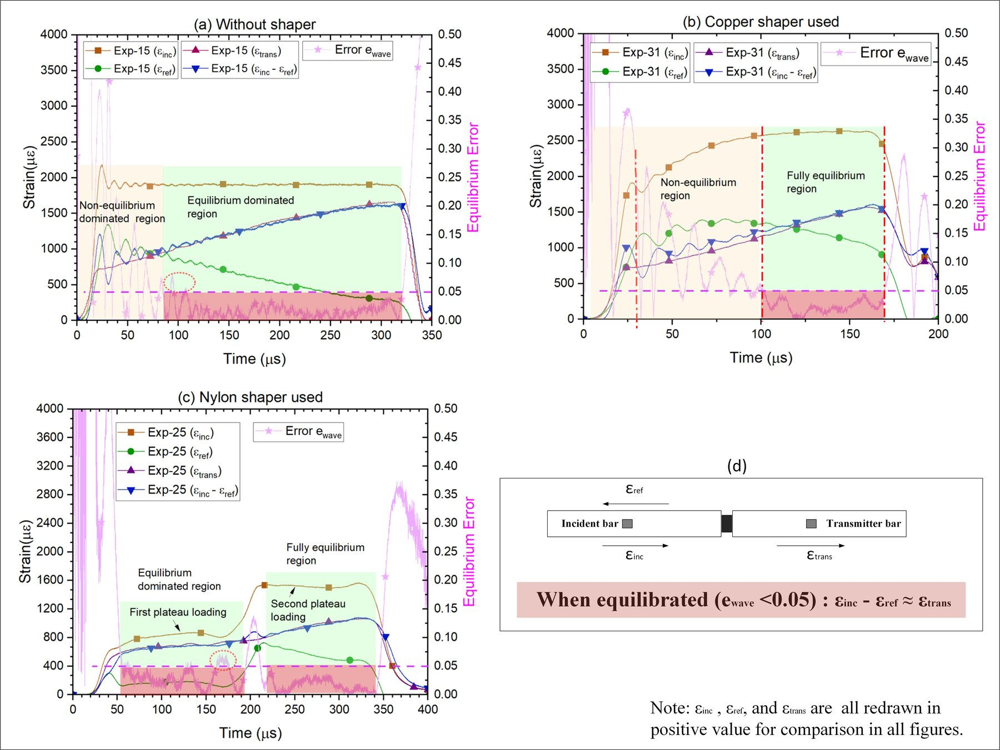
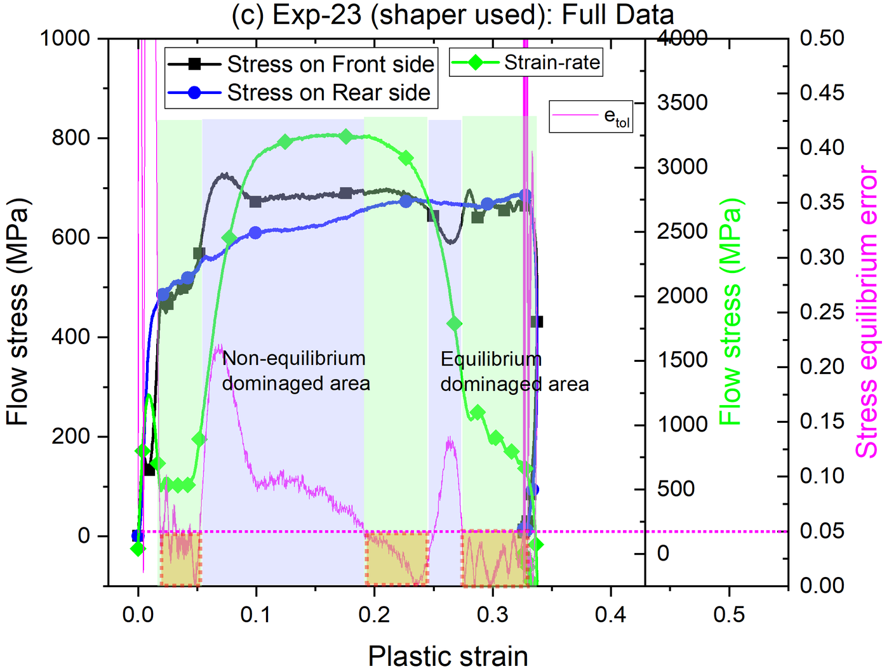

Classical SHPB practice shapes every test so that the strain-rate stays as close to constant as possible, because rate-dependent strength is conventionally reported at a single nominal rate. Paper 2 asks a more basic question: does the test actually need that? It shows, both by deriving the mechanics and by testing the claim against real records, that a specimen can be in dynamic stress equilibrium while its instantaneous strain-rate is still changing, and that deliberately keeping such varying-rate data, rather than discarding it, produces a better flow stress characterization. This guide is meant to be readable without the original paper open: it restates the paper’s core finding, adds the underlying continuum-mechanics argument for why it is true, and points to the figures in the paper that show it experimentally.
Keywords: stress equilibrium; strain-rate; SHPB; Lagrangian coordinate; flow stress; data qualification
1. The question this paper asks
A textbook SHPB test is engineered, mainly through pulse shaping (see Section 5 of the SHPB note), to hold the specimen’s strain-rate roughly flat once loading is under way. The purpose is bookkeeping: a stress-strain curve is easiest to report and compare when it corresponds to a single nominal rate. But the wave mechanics that make the test valid, one-dimensional propagation and dynamic stress equilibrium inside the specimen, do not by themselves demand a flat strain-rate history. They are a separate requirement, layered on top of the physics for reporting convenience.
Paper 2 takes that distinction seriously. Instead of shaping the pulse for a flat rate, it lets the strain-rate vary within each test, which sweeps a much wider band of the strain–strain-rate plane per specimen, and then asks only whether the record is internally admissible: is the specimen in stress equilibrium, and is it still loading rather than unloading, at each instant. Records that pass are qualified and used to train the paper’s ANN and SVD-based flow stress equation (the same low-rank framework established in Paper 1’s legitimacy criterion). The experimental and data-driven side of that argument is summarized in Section 6; the rest of this guide works through the mechanics that make it possible.
2. Two derivatives of one function
Track a single material point inside the specimen with a Lagrangian coordinate \(X\), measured from the incident-bar end to the transmitter-bar end, and let \(v(X,t)\) be that point’s particle velocity at time \(t\). Two quantities are built from \(v(X,t)\), and it is easy to conflate them because both are loosely called “how fast things are changing”:
- Local strain-rate, \(\dot\varepsilon(X,t) = \partial v/\partial X\): at a fixed instant \(t\), how the velocity varies from one material point to its neighbor along the specimen’s length.
- Local acceleration, \(a(X,t) = \partial v/\partial t\): at a fixed material point \(X\), how that point’s own velocity changes as time moves forward.
These are two different partial derivatives of the same two-variable function. Nothing about calculus links them: one being zero at a point places no constraint on the other. Whatever relationship strain-rate and acceleration turn out to have in a real SHPB test has to come from the physics of the specimen, not from the definitions themselves.
3. What “equilibrium” actually constrains
The physics comes from the equation of motion for a one-dimensional bar, written for the same material point:
where \(P(X,t)\) is the nominal (engineering) stress and \(\rho_0\) the material density. This equation says exactly what most SHPB discussions leave implicit: acceleration at a point is caused by a stress gradient at that point, not by the stress itself. “Dynamic stress equilibrium,” the condition SHPB practice checks with the force-balance measure of Eq. (4) in the SHPB note, means the stress is uniform along \(X\) at a given instant, \(\partial P/\partial X \approx 0\). Substituted into Eq. (2), that gives:
Equilibrium pins down acceleration, and only acceleration. It says the velocity field has, at that instant, stopped evolving in time. It says nothing at all about whether the field is flat in space, i.e. whether \(\partial v/\partial X\) is zero. Those are the two derivatives from Section 2, and Eq. (3) only ever touches one of them.
4. Why the velocity difference persists
The two ends of the specimen move at velocities \(v_1(t)\) (incident-bar face) and \(v_2(t)\) (transmitter-bar face). These are boundary conditions imposed from outside, set by the striker velocity and the wave transmitted through the bars, exactly the quantities used in the SHPB note’s data-reduction equations. Nothing about the specimen’s internal state can make \(v_1\) equal \(v_2\); the specimen can only decide how the velocity is distributed between them.
The picture to hold onto: once the internal velocity profile’s shape stops changing in time, every point has zero acceleration (equilibrium, Eq. (3)) even though the profile still ramps from \(v_1\) to \(v_2\) across the length \(L_0\) (a nonzero strain-rate). A frozen straight line is not a flat line.
Figure 1 puts the two snapshots side by side. Early in loading, the internal profile is still reshaping itself, so somewhere along \(X\) the velocity is still changing with time: acceleration is nonzero and the specimen is not yet in equilibrium. Once the reverberating wave has smoothed the profile into a shape that itself stops changing, the specimen enters the equilibrium window: acceleration is zero everywhere, but the frozen profile still runs from \(v_1\) down to \(v_2\), so it still has a slope. That slope is exactly the strain-rate:
If \(v_1(t)\) and \(v_2(t)\) themselves drift slowly compared with the time a wave needs to cross the short specimen, the frozen profile can re-settle to the new boundary values almost as fast as they change, so the specimen can stay inside the equilibrium window while Eq. (4) keeps producing a slowly varying, non-constant strain-rate. Equilibrium is a statement about the profile’s shape being stationary at each instant; it is silent on whether the boundary values it stretches between are themselves fixed.
5. The paper’s own evidence
Section 3 is a derivation; Paper 2 backs it with measured SHPB records on a C54400 phosphor bronze-copper alloy. Two figures make the point from opposite directions:
- Fig. 14 shows a test in which the front/back force-balance criterion (equilibrium) is satisfied while the instantaneous strain-rate is still visibly time-varying, exactly the frozen-but-sloped profile of Section 4.
- Fig. 18(c) shows the converse case: a near-constant strain-rate recorded while the equilibrium criterion is not satisfied, confirming that a flat rate history is no guarantee of internal stress uniformity either.


Taken together, the two figures show equilibrium and rate-constancy moving independently of each other in the same dataset, which is the experimental counterpart of Eq. (3) telling only half the story. One caveat carried over from the underlying technique: the force-balance measure of Eq. (4) in the SHPB note is a necessary but not strictly sufficient proxy for true internal stress uniformity, a limitation the paper addresses by leaning on prior numerical validation of that criterion rather than treating it as exact.
6. Why it matters
Once constant strain-rate is recognized as a reporting convention rather than a validity requirement, a qualified varying-rate record stops being a discard and becomes usable data. Paper 2 turns that into a two-part screening rule, a stress equilibrium check and a check that the instantaneous strain-rate stays positive (the specimen is loading, not unloading), and keeps every record that passes both, however much its rate wanders during the test.
The payoff is density, not just permission. A handful of shaped, flat-rate tests samples the strain–strain-rate plane at only a few discrete rates; the same number of varying-rate tests sweeps continuous bands across it. That denser, more irregular scatter is exactly what an ANN needs to reconstruct a finely-filled flow-stress array, which the paper then reduces, via the SVD framework Paper 1 established as the legitimacy criterion for decoupled (Johnson-Cook-type) equations, into a compact discrete-or-analytical flow stress equation. The paper reports that instantaneous strain-rate, not the averaged rate conventional SHPB reporting relies on, is what actually correlates with flow stress, and identifies five uncertainties in the conventional sequential-fitting procedure that this data-driven route avoids. Its companion, Paper 3, extends the same qualified-data machinery to a third variable, temperature.
7. Takeaway
Strain-rate and acceleration are two different partial derivatives of the same velocity field, one along the specimen’s length, one in time, and the equation of motion ties dynamic stress equilibrium only to the second. A specimen can therefore be internally stress-equilibrated while its strain-rate keeps changing, because equilibrium only requires the velocity profile’s shape to stop evolving, not to be flat. Paper 2 shows this is not a corner case: it is common enough in real SHPB records (Fig. 14) that discarding varying-rate data on principle throws away information the physics never required removing, and using it instead is what lets the paper build a more accurate, more densely-supported flow stress equation.
References
- Huang, X., & Li, Q. M. (2025). Determination of dynamic flow stress equation based on discrete experimental data: Part 1 — Methodology and the dependence of dynamic flow stress on strain-rate. International Journal of Impact Engineering, 206, 105403. https://doi.org/10.1016/j.ijimpeng.2025.105403
- Huang, X., & Li, Q. M. (2023). The legitimacy of decoupled dynamic flow stress equations and their representation based on discrete experimental data. International Journal of Impact Engineering, 173, 104453. https://doi.org/10.1016/j.ijimpeng.2022.104453
- Huang, X., & Li, Q. M. (2025). Determination of dynamic flow stress equation based on discrete experimental data: Part 2 — Dynamic flow stress depending on strain, strain-rate and temperature. International Journal of Impact Engineering, 206, 105432. https://doi.org/10.1016/j.ijimpeng.2025.105432
For the wave-mechanics side (data-reduction equations, the force-balance equilibrium measure, pulse shaping), see the Split Hopkinson Bar note.